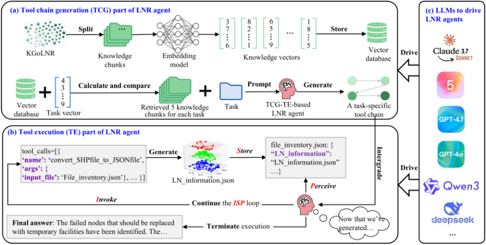
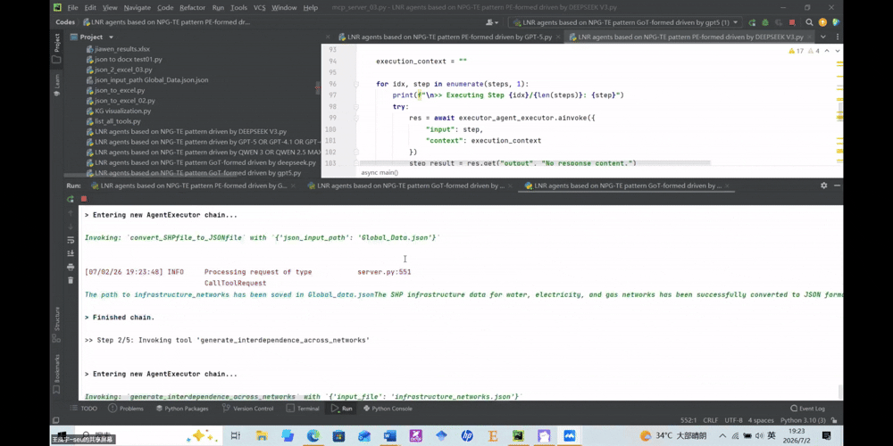
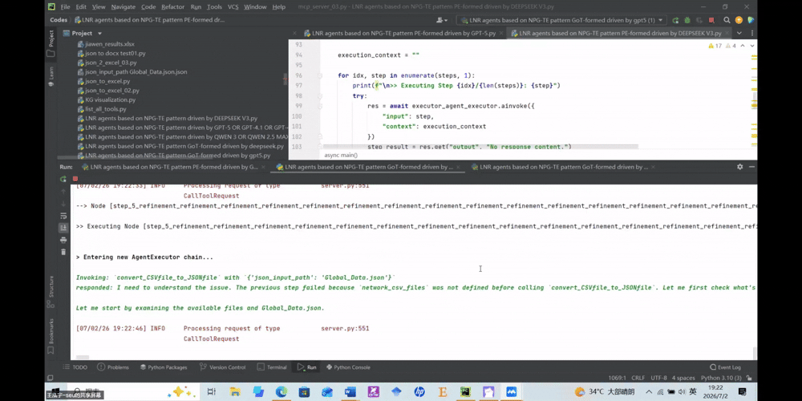
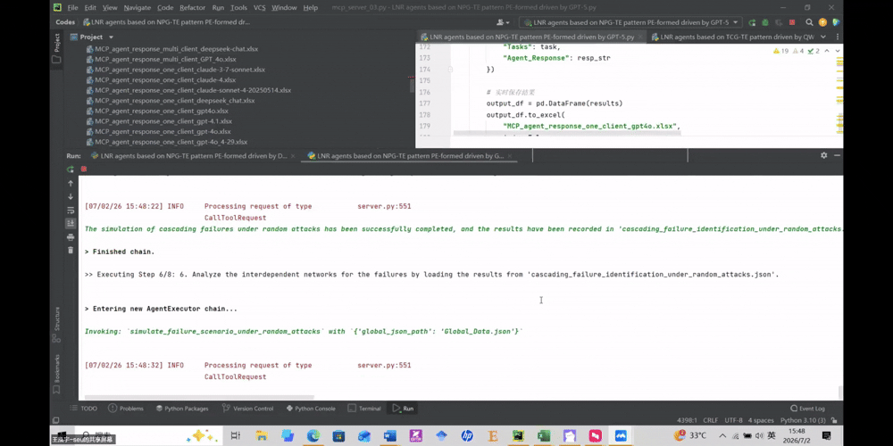

Connect domain knowledge
The recovery knowledge graph represents 47 tools, their 7 servers, and input–output dependencies through includes and supports relations.
LLM-empowered agents for lifeline network recovery
with graph-guided MCP tools.
Average task solving rate
More tasks solved
Fewer extraneous tool calls
Across 8 LLMs on 50 tasks. Improvements are relative to the best-performing traditional NPG–TE agent for each LLM. See the comparison ↗
THE CHALLENGE
Power, water, and gas networks depend on one another. Restoring them after a disaster requires more than a single algorithm: managers must coordinate data preparation, failure analysis, repair planning, and resource allocation.
LNR Agents connect these steps. A language model uses a knowledge graph to generate a task-specific tool chain, then invokes domain tools through the Model Context Protocol.
Explore the approach ↓SEE IT IN ACTION
Original recordings from the project repository.
Explore the workflow, one demonstration at a time.
A recorded walkthrough of the interface used to operate TCG–TE LNR agents with graph-guided MCP tools.
These are recorded research demonstrations, not a live agent service. Video controls support seeking, playback speed, and fullscreen.
HOW IT WORKS
The tool chain generation–tool execution
(TCG–TE) pattern separates orchestration
from execution.
The recovery knowledge graph represents 47 tools, their 7 servers, and input–output dependencies through includes and supports relations.
Retrieve the top 5 task-relevant knowledge chunks. The LLM combines these relationships with the task to produce a tool-usage reference.
Execute MCP tools, store their outputs, and check for the required final file. Repeat the loop until the output is available.

Evaluated using interdependent lifeline networks in Shelby County, Tennessee, USA.
Rank facilities using network centrality.
Restore service through temporary replacements.
Assess network metrics and served population.
Prioritize and optimize facility repairs.
Allocate resources under different objectives.
THE EVIDENCE
32 agents · 8 LLMs · 4 patterns
50 recovery tasks in the main benchmark.
+11.7 percentage points; 13.9% relative improvement.
Wilcoxon signed-rank test: p = 0.011.
68.2% relative reduction.
Wilcoxon signed-rank test: p = 0.018.
TCG–TE agents solved all 50 tasks.
None of the 24 traditional NPG–TE agents completed the entire benchmark.
Source: Tables 6–7 and Section 3.2.1. Values are means across the eight LLMs. Best NPG–TE selects the best-performing traditional variant per LLM from ReAct, Plan-and-Execute, and Graph-of-Thought. ETCR measures extraneous tool calls per successfully solved task.
A CLOSER LOOK
Original GIF excerpts show agent operation
across TCG–TE and traditional patterns.
Graph-guided MCP tool execution

Graph-of-Thought with discrete MCP tools

Graph-of-Thought with discrete MCP tools

Plan-and-Execute with discrete MCP tools
Clips are qualitative examples from different runs, not synchronized comparisons. Select a clip to view it at full size.
BEYOND A FIXED TOOLKIT
Domain tools are hosted on MCP servers. The prototype supports integrating an additional server, while robustness experiments explore expanding the available toolkit up to 209 tools with automatic knowledge-graph updates.
RESEARCH CONTEXT
No. The LLM orchestrates and invokes predefined domain tools. Network analysis, failure simulation, and optimization are carried out by the underlying tools; the agent coordinates their use for the requested task.
The knowledge graph describes which server hosts each tool and how one tool’s output supports another tool’s input. Relevant graph-derived knowledge is retrieved to help the LLM generate a task-specific tool chain before execution.
The main experiment evaluates 50 predefined recovery tasks in a Shelby County case study, comparing 32 agents. The paper also reports robustness tests. These results demonstrate performance under the evaluated conditions; they do not establish guaranteed success in every disaster or network.
This page presents recorded demonstrations. To run the agents, use the implementation, input data, and configuration resources in the linked GitHub repository. Running the system requires the corresponding local environment and model access.
PAPER & RESOURCES
Sustainable Cities and Society, 149 (2026), 107846
* Corresponding author: Shenghua Zhou
@article{wang2026lnragents,
title = {LLM-empowered agents for lifeline network recovery
with graph-guided MCP tools},
author = {Wang, Hongyu and Zhou, Shenghua and Chen, Zhengyi
and Wang, Wentao and Li, Lingli and Ng, S. Thomas},
journal = {Sustainable Cities and Society},
volume = {149},
pages = {107846},
year = {2026},
doi = {10.1016/j.scs.2026.107846}
}